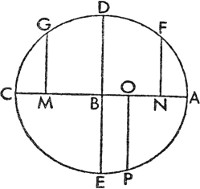
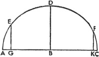
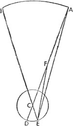

8. Hareketlerdeki Hususi Farklar ve Bunların Tablosu Üzerine
O halde AB yayı 70'ya eşit olduğundan ve onu boyuna ayıran kirişten farklı görünmediğinden, ortalama ile görünen hareketler arasındaki kimi diğer farkları göstermek zor olmayacak. Bu farklara Yunanlar, Prosthaphaereses; daha sonraki yazarlar aequationes demiştir[137]; bu farkların eklenmesi ya da çıkarılmasıyla görünen hareketler ortalama hareketlerle uyumlu hale getirilmiştir.
Biz de daha uygun olduğundan Yunanca kelimeyi kullanacağız. Bu durumda ED yayı 3ºye eşitse, AB'nin BF kirişine oranından ötürü BF yayı, 4'ya eşit olur, yani eşitlemenin ürünüdür. Ve ED, 6ºye eşitse BF yayı, 7'dır; ED, 9º ise BF yayı 11'dır ve bu böyle devam eder. Söylediğimiz gibi, eğikliğin değişimiyle ilgili de benzer bir oran kullanmamız gerektiğini düşünüyoruz. En büyük eğim ile en küçük eğim arasında 24'lık bir fark bulunur. Bu 24', her 1717 yılda basit yapılı ayrıklıktan oluşan bir yarım çemberi görür ve çemberin bir çeyreğini gören ortalama fark, bu ayrıklıktaki küçük çemberin kutbunun 23º40'lık eğimde yer alacağı 12' olacaktır. Anlattığımız gibi, bu yolla eklenen tablodaki söz konusu orana da uygun olarak farkın diğer kısımlarını da çıkaracağız. Ve bu kanıtlarla görünen hareketler çeşitli yollarla bir araya getirilebilirse de en iyisi, kendisi sayesinde bütün hususi eşitlemelerin tek tek ele alınabileceği, hareketlerin hesabının daha kolay bir şekilde anlaşılabileceği ve kanıtları sunulmuş olan açıklamalara daha uygun düşen yoldur. Buna uygun olarak her defasında 3ºlik artış gösteren, 6 sütunlu bir tablo çizeriz. Bu sayede, benzer tablolarda da yapacağımız gibi, çok fazla yer kaplanmamış olacak, buna mukabil çok küçük bir alana sıkıştırılmış gibi de durmayacak. Tablonun 4 temel sütunu olacak: İlk ikisi, her iki yarım dairenin derecelerini içerecek ve biz onlara genel sayılar diyeceğiz; zira burçlardaki dairenin eğimi basit bir sayıyla ifade edilir ve bu sayının iki katı ekinoksların hareketinin eşitlemesine uydurulur; rakamlar artışın başladığı noktada kendi başlangıçlarına sahip olur. Üçüncü sütunda 3ºye uyan ekinoksların eşitlemeleri yer alacak; Koç'un başından hesapladığımız ilkbahar ekinoksundaki ortalama hareket onlara eklenecek ya da onlardan çıkarılacak. Eksiltici eşitlemeler, ayrıklıklarda ya da ilk sütunda yer alan birinci yarım dairedeki rakamlara; artırıcı eşitlemeler ise ikinci sütundakilere ya da ikinci yarım dairedekilere tekabül eder. En nihayetinde son sütunda, eğime göre düzenlenen farklar ve 60'ya kadar varan dakikalar yer alacak; zira en büyük eğim ile en küçük eğim arasında 24'lık fark yerine 60'lık farkı kullanıyoruz; böylece aynı mantıkla orantılı dakikaları da eğimdeki diğer farklılıklarla orantılı olarak ayarlamış oluyoruz. Ayrıklığın başladığı ve sonlandığı yere uygun olarak 60'yı almışsak da 55' yerine 33'lık ayrıklıktaki eğim farklılığı olan 22'yı alıyoruz. Aynı yolla 48ºlik ayrıklıkta 20' yerine 50'yı koyuyoruz ve ilişikteki tabloda da görüleceği gibi diğerlerini de buna uygun olarak devam ettiriyoruz.

9. Ekinoksların Devinmesiyle İlgili Olarak Aktarılan Bilgilerin Gözden Geçirilmesi ve Düzeltilmesi Üzerine
Fakat bir çıkarımla ayrıklık hareketindeki artışın başlangıcının, Calippus'un birinci periyodunun 36. yılından Antoninus'un 2. yılına kadarki dönemin ortasında meydana gelmiş olduğunu kabul edip ayrıklık hareketinin sırasını bu başlangıca göre ayarladığımıza göre, bunu doğru bir şekilde ayarlayıp ayarlamadığımızı ve bunun gözlemlerle de uyumlu olup olmadığını kontrol etmemiz gerekir. Tekrar yıldızlara dair, Timochares, Ptolemaeus ve Machometus Arecensis tarafından gerçekleştirilen üç gözlemi inceleyelim: İlk aralıkta 432, ikinci aralıkta 742 Mısır yılı olduğu açıktır. Dönemin ilk aralığındaki düzenli hareket 6º, düzensiz hareket ise 4º20' kadardı; düzenli hareketten 1º40' çıkarılınca çifte ayrıklık hareketi de 90º35' kadar olmuştu. İkinci aralık boyunca düzenli hareket 10º21', düzensiz hareket 11º30', çifte ayrıklık hareketi de düzenli harekete 1º9' eklenerek 155º34' olmuştu. Buna göre, önceki gibi, ekliptiğin yayı ABC; B, ortalama ilkbahar ekinoksu olarak bir kutup; AB yayı da 1º10' olsun; ayrıca ADCE küçük dairesi çizilsin. Fakat B'nin düzenli hareketi A yönünde, yani batıya doğru kabul edilsin; A, düzensiz ekinoksun en batıdaki ucu, C de düzensiz ekinoksun en doğudaki ucu olsun.

Dahası, ekliptik kutbundan B noktasından geçerek DBE insin. Birbirlerinin kutupları boyunca çizilen çemberler birbirlerini dik keseceği için ekliptikle birlikte ADCE küçük çemberini dört eşit parçaya bölsün. Aksi durumda ADC yarım çemberindeki hareket doğu, CEA'daki diğer hareket ise batı yönünde olduğundan, görünen ekinoksun en yavaş hali, B'nin ileri hareketine direncinden ötürü D'de olacak; fakat aynı yöndeki ileri hareketlerden ötürü en büyük hız da E'de gerçekleşecektir. Dahası D'nin her bir yanında FD yayı, DG yayına; o da 45º17'30''ye eşitlensin. F, ayrıklığın ilk durağı olsun, yani Timochares tarafından gözlemlenen ilk durak; G, Ptolemaeus tarafından gözlemlenen ikinci durak; P de Machometus Arecensis tarafından gözlemlenen üçüncü durak olsun. FN ve GM büyük daireleri bu noktalardan; OP ise ekliptiğin kutuplarından insin; bu çok küçük dairede bütün bunlar daha ziyade düz çizgi olarak görünür. Bu yüzden FDG yayı, ADCE 360º iken, 99º35'ya eşittir; buradan hareketle ABC'nin 2º20'ya eşit olduğu durumda MN, 1º40'ya; MBO'nun 109'ya eşit olduğu durumda GCEP yayı 155º34'ya eşittir. O halde, çıkarmayla PAF yayı 113º51' bulunur; çünkü ON de 31'ya eşittir. Fakat toplama ile DGCEP yayı 200º51' ve EP de DGCEP'nin 180ºden farkına, yani 20º51'ya eşittir. Buna göre dairedeki kirişler tablosu sayesinde düz bir çizgi olarak AB'nin 1000 birim olduğu durumda BO 356 birime eşittir. Fakat AB 70' iken, BO da yaklaşık 24'ya eşittir ve MB 50'dır. Buradan hareketle MBO, 74'ya eşittir ve NO, MN'nin MBO'dan farkına, yani 26'ya eşittir. Fakat MBO, 69'ya; NO da 31'ya eşittir. Bu yüzden NO'nun 5'lık eksiği, MO'nun da 5'lık fazlası vardır. Buna uygun olarak ADCE dairesi, her iki taraftaki eksiklik ve fazlalık ortadan kaldırılana kadar döndürülmelidir. Fakat bu, DG yayı 42º30' dolayısıyla DF yayının da 48º5' olduğu durumda gerçekleşir. Bu sayede hatalar düzeltilmiş görünecek ve her hesap bütünüyle doğru olacaktır; zira en yavaş hareketin D sınırındaki başlangıcıyla birlikte DGCEPAF yayı 311º55'ya eşittir; bu da ilk duraktaki ayrıklık hareketidir; ikinci durakta ise DG yayı 42º30'ya; üçüncü durakta ise DGCEP yayı 198º4'ya eşittir. Bu durumda AB 70'ya eşit olduğundan, ilk durakta BN 52'ya; gösterildiği gibi, ikinci durakta MB, 47'30''ye; üçüncü durakta ise yine BO yaklaşık 21'ya eşittir. Bu yüzden ilk aralık boyunca MN yayı 1º40'ya, ikinci aralık boyunca MBO yayı da 1º9'ya eşit olup tümüyle gözlemlerle uyumlu hale gelir. Dahası, gösterildiği gibi, bu ortalamalar sayesinde ilk durakta 155º57'30''lik, ikinci durakta 21º15'lık, üçüncü durakta da 99º2'lık basit ayrıklıklar ortaya konmuş olur.
10. Ekvator ile Ekliptik Kesişimleri Arasındaki En Büyük Fark
Aynı şekilde ekliptik ile ekvatorun eğimindeki farklılığa dair açıkladıklarımızı destekleyip doğruluğunu ortaya koymak istiyoruz. Bunun için elimizde Ptolemaeus'un döneminde, Antoninus Pius'un ikinci yılına dair 21º15'lık düzeltilmiş basit ayrıklık ve birlikte değerlendirilmek üzere 23º51'20''lik en büyük eğiklik bulunmakta. Bu konumdan bizim gözlemimize değin 1387 yıl bulunmaktadır; bu dönem boyunca basit ayrıklık hareketinin 144º4' olduğu hesaplanmış ve yine bu dönemde yaklaşık 23º28'24''lik bir eğiklik bulunur. Bununla alakalı olarak yine ekliptiğin ABC yayı ya da onun yerine yayın kısalığından ötürü düz bir çizgi çizilsin; üzerinde de önceden olduğu gibi, B kutbu etrafında basit ayrıklığın yarım dairesi yer alsın.
A, en büyük yükselimin sınırı ve C de en küçük yükselimin sınırı olsun; bulmaya çalıştığımız da bizzat bunlar arasındaki farktır. Bu yüzden küçük bir dairede AE yayı 21º15'ya; ED de AD'nin AE'den farkına; yani 68º45'ya eşit olsun; mevcut hesaplamaya göre EDF yayı 144º4'; DF yayı, EDF'nin ED'den farkına; yani 75º19'ya eşit olur. EG ve EK dik çizgileri ABC çapına indirilsin. Böylece Ptolemaeus'tan günümüze eğimlerdeki farklılıktan ötürü büyük dairede GK yayı 22'56''ye eşittir. Fakat düz bir çizgi gibi olduğundan, çapın görüntüsü olan AC 2000 birimken, GB, ED'nin iki katını ayıran kirişin yarısına; yani 932 birime eşittir. Ayrıca KB, DF'nin iki katını ayıran kirişin yarısına, yani 967 birime ve AC 2000 birim iken GK 1899 birime eşittir. Fakat GK, 22'56'', AC de yaklaşık 24' olduğuna göre bulmaya çalıştığımız eğimlerin en büyüğü ile en küçüğü arasındaki fark ortaya çıkar. Buna göre Timochares ile Ptolemaeus dönemleri arasındaki en büyük eğimin 23º52', en küçük eğimin ise 23º28' olduğu artık anlaşılmış olur. Buradan hareketle, devinmeyle alakalı olarak açıkladığımız aynı matematiksel usavurmayla bu çemberlerin ortalama eğikliklerinin ne olduğu da bulunmuş olur.
11. Ekinoksların ve Ayrıklığın Düzenli Hareketlerine Ait Konumların Belirlenmesi Üzerine
Bütün anlatılanlardan sonra sıra ilkbahar ekinoksunun hareketlerine ait konumları belirlemeye geldi; bazıları bu konumlara "kökler"[138] diyor, zira herhangi bir süre için hesaplamalar bunlardan yapılabilmektedir. Ptolemaeus, buna dair en eski zamanın Nabonassar Caldeorum'un krallığının[139] başlangıcında olduğunu düşünüyordu, oysa tarihçilere göre bu Salmanassar Caldeorum'un[140] yönetimine kadar uzanır. Fakat daha iyi bilinen zamanları araştıran bizler, yaz gündönümünden hesaplanan, Nabonassar'dan yaklaşık 28 yıl önceye denk gelen ilk olimpiyatla başlarsak, bunu yetkin bir şekilde değerlendirebiliriz[141]; Censorinus[142] ve diğer güvenilir yazarlara göre bu zamanda Dişi Köpek[143] yükselmiş ve olimpiyat oyunları kutlanmaya başlanmıştı. Göksel hareketleri hesaplamada gerekli dönemleri daha kesin bir ölçüyle ele alalım: İlk olimpiyattan ve Yunan takvimine göre Hekatombaion ayının ilk gününün öğle vaktinden Nabonassar'a ve Mısır takvimine göre Thoth ayının ilk gününün öğlen vaktine kadar 27 yıl ve 247 gün; bu noktadan İskender'in ölümüne kadar da 424 Mısır yılı vardır. Fakat İskender'in ölümünden J. Caesar takviminin başlangıcına kadarki dönemde, J. Caesar'ın kendisiyle beraber yılın başlangıcı olarak kabul ettiği Ocak ayının ilk gününden önceki gece yarısına kadar 278 Mısır yılı ve 118,5 günü vardır; Caesar'ın düzenlediği bu yıl, onun Pontifex Maximus[144] olarak geçirdiği üçüncü yıla ve Marcus Aemilius Lepidus'un konsüllüğüne denk gelmişti. Julius Caesar tarafından düzenlendiği için sonraki yıllara Jülyen yılları denmiştir. Caesar'ın dördüncü konsüllüğünden Octavius Augustus'a kadarki dönemde, her ne kadar Augustus'un senato ve diğer vatandaşlar tarafından Numatius Plancus'un fermanına uygun olarak, Marcus Vipsanus ile kendisinin konsüllüğünün yedinci yılında imparator ve tanrılaştırılmış Julius Caesar'ın oğlu ilan edildiği 1 Şubat'tan önceki 16. güne denk geliyorsa da, Roma takvimine göre 1 Ocak'a kadar 18 yıl vardı. Fakat bundan iki yıl önce, Antonius ile Cleopatra'nın düşüşüyle birlikte Roma idaresine katıldıklarından, Mısırlılar Roma takvimine göre 1 Eylül'den önceki üçüncü güne denk gelen Thoth ayının ilk gününün öğlenine kadarki süreyi 15 yıl 246,5 gün olarak hesaplamıştır. Buna uygun olarak Augustus'tan yine Ocak'ta başlayan İsa takvimine kadar, Roma takvimine göre 27 yıl; Mısır takvimine göre 29 yıl 130,5 gün vardır. Claudius Ptolemaeus'un yıldızların konumlarını gözlemleyerek söylediğine göre, buradan Antoninus'un ikinci yılına kadar Roma takvimine göre 138 yıl 55 gün vardır ve bu yıllara Mısır hesabına göre 34 gün eklenir. İlk olimpiyat ile bu zaman noktasına kadar 913 yıl 101 gün vardır; zira ekinoksların düzenli devinmesi 12º44', basit ayrıklık ise 95º44' kadardır. Fakat anlatıldığı gibi, Antoninus'un ikinci yılında ilkbahar ekinoksu, Koç'un başında bulunan yıldızların ilkinin 6º40' kadar batısındadır ve burada 42º30'lık çifte ayrıklık bulunduğundan, düzenli hareket ile görünen hareket arasında 48'lık bir fark söz konusudur. Ve bu fark, görünen hareketin 6º40'sına uyarlandığında ilkbahar ekinoksunun ortalama konumunun 7º28' olmasını sağlar. Buna çemberin 360ºsini ekler ve toplamdan 12º44'yı çıkarırsak –Atinalıların Hekatombaion ayının ilk gününün öğleninde başlayan ilk olimpiyat için– Koç'taki ilk yıldızın 5º16' doğusunda yer alan ilkbahar ekinoksunun ortalama konumunu 354º44' olarak elde etmiş oluruz. Aynı yolla basit ayrıklığın 21º15'sından 95º45' çıkarılırsa geriye olimpiyatların aynı başlangıcına göre 285º30'lık basit ayrıklık konumu kalacaktır. Ve yine fazlalık olduğunda, hareket eklenmesi suretiyle dönemin uzunlukları uyumlu hale getirilerek İskender'in ölümü zamanındaki düzenli hareketin kökü ya da konumu 1º2', basit ayrıklık hareketinin konumuysa 332º52' olarak bulunacak; Caesar takviminin başında 4º55'lık ortalama hareket ve 2º2'lık ayrıklık; bunun yanında İsa takviminin başlangıcında 5º32'lık ortalama hareket konumu ve 6º45'lık ayrıklık elde edilmiş olacak ve bu şekilde istediğimiz tarihin başlangıcına göre hareketlerin köklerini belirleyebiliriz.
12. İlkbahar Ekinoksundaki Devinmenin ve Eğikliğin Hesaplanması Üzerine
O halde ilkbahar ekinoksunun konumunu belirlemek istediğimizde, varsayılan başlangıçtan verilen zamana kadarki yıllar genelde kullandığımız Roma takvimindeki gibi düzensizse, onları düzenlilere ya da Mısır yıllarına dönüştüreceğiz. Zira bahsettiğimiz nedenden ötürü düzenli hareketleri hesap ederken Mısır yıllarından başkasını kullanamayız. Yılların sayısı 60 yıllık periyottakinden daha uzun olduğu için onu 60 yıllık periyotlara bölecek ve bu 60 yıllık periyotlar boyunca devam eden hareketler tablosunu işlerken hareketlerde beliren ilk sütunu fazlalık olarak geçip ikinci sütunu başlangıç alarak 60ºlik periyotları tespit edeceğiz; varsa takip eden derece ve dakikalarla bu devam edecektir. Sonra diğer yıllarla birlikte ikinci sütunda, birinci konumdan itibaren 60ºlik periyotları, dakikaları ve dereceleri ele alacağız. Günleri, günler ve dakikalar tablosuna uygun olarak düzenli hareketleriyle alakalandırmayı arzuladığımızdan aynı şeyi günler ve 60 günlük periyotlar için de yapacağız; bu durumda –her ne kadar günlük hareket söz konusu olduğunda sadece saniye seviyesinde ya da saniyenin altında fark yaratsalar da– günlerin dakikaları ya da bizzat günler, hareketlerinin yavaşlığından ötürü yanlışlıkla yok sayılmazlar. Bu yüzden aynı türden tekil rakamları tekil rakamlara ekleyerek onları kökleriyle bir araya getirdiğimizde, –altı tane 60ºyi göz ardı edip– ilkbahar ekinoksunun ortalama konumunu, Koç'taki ilk yıldızın batısına olan mesafesini ya da bizzat bu yıldızın ekinoksun doğusundaki mesafesini elde etmiş olacağız. Ayrıca basit ayrıklığın kendisi de farklılık tablosunda, son sütuna yerleştirildiğinden orantılı dakikaları bulup bir kenarda tutabileceğiz. Sonra aynı tablonun üçüncü sütununda çifte ayrıklıklara karşılık gelen eşitlemeleri –sayelerinde hakiki hareketin ortalamadan ayrılacağı dereceleri ve dakikaları– bulacağız ve çifte ayrıklık bir yarım daireden küçük olursa eşitlemeyi ortalama hareketten çıkaracağız; aksine çifte ayrıklık 180ºyi aşmışsa, yani bir yarım daireden daha büyükse eşitlemeyi ortalama harekete ekleyeceğiz. Buna göre toplam ya da geri kalan da ilkbahar ekinoksunun hakiki ve görünen devinmesini ya da daha sonra Koç'taki ilk yıldızın ilkbahar ekinoksundan açısal uzanımını verecektir. Fakat başka herhangi bir yıldızın konumunu ararsanız, yıldızlar kataloğunda belirlenen ilgili rakamı eklemeniz gerekir. Gerçekten de eserde yer alan bu hususlar örneklerle daha açık hale gelecektir; problemimiz İsa'dan sonra 1525'te, 1 Mayıs'tan önceki on altıncı günden itibaren ekliptiğin eğimiyle ilkbahar ekinoksunun hakiki konumunu ve Başak takımyıldızındaki Başak'ın[145] aynı ekinokstan açısal mesafesini bulmak olsun. Bu yüzden Roma takvimine göre İsa takviminin başlangıcından bu zamana kadarki sürenin 1524 yıl ve 106 günden oluştuğu açıktır; ayrıca eşit yıllarda 1525 yıl 122 güne denk gelmesi için araya 381 günlük ekleme yapılması söz konusudur; burada her biri 60 yıldan oluşan 25 periyot ve fazladan 25 yıl, ayrıca her biri 60 günden oluşan 25 periyot ve 2 gün vardır. Fakat ortalama hareket tablosunda 60'ar yıllık 25 periyot, 20º55'2''ya; 25 yıl, 20'55''ya; 60'ar günlük iki periyot, 16'ya; geri kalan 2 gün ise üç dakikaya karşılık gelir. Bütün bunlar, 5º32'lık kökleriyle birlikte ilkbahar ekinoksunun ortalama devinmesine, yani 26º48'ya eklenir. Benzer şekilde 60'ar yıllık 25 periyotta basit ayrıklık hareketi, iki 60º ve 27º15'3''; 25 yılda 2º37'15''; 60'ar yıllık iki periyotta 2'4'' ve 2 günde 2'' olur. Ayrıca 6º45'lık kökle birlikte basit ayrıklığa, yani 166º40'ya eklenir. Bu ayrıklığa karşılık gelen eşitleme tablosunun son sütunundaki orantılı dakikaları elimizde tutalım; zira eğimi incelerken işimize yarayacak; bu durumda buradan 1' buluruz. Daha sonra 333º20'lık çifte ayrıklığa uyacak ölçüde, çifte ayrıklık bir yarım daireden daha büyük olduğundan, eklenecek eşitleme olarak 32'yı buluruz. Ve bu, ortalama harekete eklendiğinde ilkbahar ekinoksunun 27º21'lık hakiki ve görünen devinmesi ortaya çıkmış olur. Ve sonunda buna Başak takımyıldızındaki Başak'ın Koç'taki ilk yıldızdan açısal mesafesini, yani 170ºyi eklersek, ilkbahar ekinoksunun –yaklaşık olarak gözlem zamanımızda bulunduğu– Terazi'nin 17º21' doğusundaki konumunu elde etmiş oluruz. Bu durumda ekliptiğin eğimi ve yükselimi, 60 oranlı dakika varken görülen orana sahiptir; yani, yükselimler tablosundaki farklar –eğimdeki en büyük ve en küçük farkları kastediyorum– bütünüyle yükselimlerin derecelerine eklenir. Fakat bu durumda 1', eğime sadece 24'' ekler. Bu yüzden tablodaki ekliptik derecelerindeki yükselimler, bu süre boyunca –her ne kadar başka bir zaman daha açık bir farklılık gösterebilse de– en küçük eğim bize yaklaştığından öylece kalır. Bu yolla bulunan basit ayrıklık 99º ise, tıpkı İsa'dan sonra 1380. Mısır yılında da olduğu gibi, verilen 25 oranlı dakika ortaya çıkar. Fakat 24' en büyük eğim ile en küçük eğim arasında yer alır ve 60'nın 24'ya oranı, 25'nın 10'ya olan oranına eşittir. Ve 10'nın 28'ya eklenmesi, bu süre için 23º38'lık eğimini verir. Sonra ekliptikteki bir derecenin eğimini, örneğin, ekinokstan 33º mesafedeki Boğa'nın 3ºsini bulmak istersek, 12ºlik farkla tabloda 12º32'yı buluruz. Fakat 60'nın 25'ya oranı, 12'nın 5'ya olan oranına eşittir ve 5'nın 32'ya eklenmesi, ekliptiğin 33ºsi için 12º37'yı verir. Aynı yolu ekliptiğin kesit açıları, ekvator ve açılımlar için de izleyebiliriz; bir tek –küresel üçgenlere özgü oranı kullanmak daha iyi değilse– kesit açılarında ekleme, açılımlardaysa çıkarma yapmak gerekir; böylece bütün bu veriler zamanlarına göre düzeltilmiş olur.
13. Güneş Yılının Büyüklüğü ve Farkı Üzerine
Söylediğimiz gibi, ekinoksların ve gündönümlerinin, Dünya'nın ekseninin eğiminden kaynaklanan devinmesiyle ilgili olan bu yöntem, aynı zamanda burada inceleyeceğimiz Güneş'in görünümünü etkilediği için, Dünya'nın merkezinin yıllık hareketiyle de doğrulanacaktır. Bu kaçınılmaz olarak bir yılın büyüklüğünün, ekinokslardan ya da gündönümlerinden birine bakıldığında bitiş noktasının düzensiz değişiminden ötürü farklı bulunması anlamına gelir; o halde bunlar karşılıklı olarak birbirini tamamlamaktadır. O halde mevsim yılını yıldız yılından ayırmamız ya da ayrıca tanımlamamız gerekir. Bunun için bize göre bir yılın dört mevsimde tamamlananına doğal yıl; devinimleri sabit yıldızlardan birine göre belirlenenine de yıldız yılı diyoruz. Bu hususta eskilerin gözlemleri birçok yolla, dönen yıl da denilen doğal yılın düzensiz olduğunu ortaya koymuştur. Örneğin Calippus, Samoslu Aristarchus ve Syracusalı Archimedes, Atina âdetine göre yılı, yaz gündönümünü başlangıç alıp 365 günlük bütüne bir çeyrek gün ekleyerek hesaplamıştı. Fakat gündönümleri konusunun detaylı ve zor anlaşılır olduğunu bilen Claudius Ptolemaeus, kendisinden öncekilerin gözlemlerine çok fazla güvenmemiş ve Rhodos'ta ekinokslarla olduğu kadar gündönümleriyle de ilgili kendisinden sonraya kayıtlar bırakmış ve çeyrek günde küçük bir hesap açığı bulunduğunu bildirmiş olan Hipparchus'a oranla daha ince eleyip sık dokuyarak söz konusu açığın, bir günün 1/300'ü kadar olduğu sonucuna varmıştı. Bunun için İskenderiye'de, Büyük İskender'in ölümünden sonraki 177. yılda, Mısır takvimine göre araya eklenmiş olan 4. günü izleyen 3. günün gece yarısında, Hipparchus tarafından olabildiğince kesin bir şekilde bulunan sonbahar ekinoksunu kabul etti. Ptolemaeus, daha sonra bu sonucu, İskenderiye'de Antoninus'un yönetiminin üçüncü yılında, İskender'in ölümünden sonraki 463. yılda, Mısırlıların 3. ayının, yani Athys'in 9. gününde, Güneş'in doğuşundan yaklaşık bir saat sonra yapmış olduğu gözlemdeki ekinoksla karşılaştırdı. Bu gözlemle Hipparchus'un gözlemi arasında 285 Mısır yılı, 70 gün, 7,2 saatlik fark vardı; oysa dönen yılda bütün günlere ek olarak bir de tam çeyrek gün olsaydı, arada 71 gün 6 saat fark olması gerekirdi. Buna göre 285 gün 1 günün 19/20'si kadar eksikti; o halde 300 günden 1 tam gün eksiliyordu. Dahası Ptolemaeus, ilkbahar ekinoksundan da benzer bir sonuç çıkarmıştır: Hipparchus'un gözlemi İskender'in ölümünden sonraki 178. yılda, Mısır takvimine göre Meshir'in 27. günü, 6. ayındaki Güneş'in doğuşunda; Ptolemaeus'unki ise İskender'in ölümünden sonraki 463. yılda, Mısır takvimine göre Pachon'un 7. gününde, 9. ayda, öğlen vaktinden biraz sonradır ve aynı şekilde 285 yıl, 1 günün 19/20'si kadar eksiktir. Ptolemaeus, bu ölçümler sayesinde dönen bir yılın 365 gün, 14 dakika, 48 saniye (ya da 5 saat, 55 dakika, 12 saniye) olduğunu saptamıştır. Daha sonra Machometus Arecensis, Suriye'de, Arata bölgesinde, İskender'in ölümünden sonraki 1206. yılda, hiç de azımsanmayacak bir çabayla sonbahar ekinoksunu gözlemleyerek onun Pachon ayının 7. gününden sonra, 8. günün ışığından önce 4,6. saatte, yaklaşık olarak gecenin 7,4. saatinde belirdiğini buldu. Bunu Ptolemaeus'un, Arata'nın 10º batısındaki İskenderiye'de, Antoninus'un 3. yılında, gündoğumundan sonraki birinci saatte yapmış olduğu gözlemle karşılaştırıp bunu Arata'daki öğlen vaktine göre düzeltti; zira ekinoksun, gündoğumundan sonraki 1,6 saat içinde belirmiş olması gerekiyordu. Buna göre 743 düzenli yıldan oluşan periyotta çeyrek günlerin toplamı 185,25 güne değil de 178 gün ve 17,6 saate ulaşmış oldu. Bu durumda 7 gün 0,4 saate ihtiyaç duyulduğundan, bir çeyrek günün, bir günün 1/106'sı kadar eksiği olduğu açıktı. Bunun için yılların sayısına uygun olarak Ptolemaeus, 7 gün 0,4 saatin 743'te birini (13 dakika, 36 saniye) çeyrek günden çıkardı ve bir doğal yılı 365 gün 5 saat 46 dakika 24 saniye olarak hesapladı. Biz de sonbahar ekinoksunu İsa'dan sonra 1515 yılında, Ekim başlangıcından önceki 18. günde; Mısır takvimine göre İskender'in ölümünden sonraki 1840. yılda Phaopi ayının 6. günündeki gündoğumundan yarım saat sonra, Frauenburg'da gözlemlemiştik. Fakat Arata, bu noktanın yaklaşık 25º –yani 1,6 saat– doğusunda olduğundan, bizim ekinoks ile Machometus Arecensis'inki arasında 158 gün 6 saat yerine 633 Mısır yılı 153 gün 6,75 saat fark vardır. Fakat Ptolemaeus'un İskenderiye'de yapmış olduğu gözlem ile bizim gözlemimizin yeri ve zamanı arasında 1376 Mısır yılı 322 gün yarım saat kadar fark bulunur. Buna göre bizimle İskenderiye arasında yaklaşık 1 saatlik fark vardır. O halde Machometus Arecensis ile bizim aramızdaki 633 yıl boyunca 4 gün 23,75 saatlik ya da 128 yıl başına 1 günlük; Ptolemaeus'tan sonraki 1376 yıl boyunca da yaklaşık olarak 12 günlük, yani 115 yıl başına 1 günlük fark vardır ve yıl her iki tarafta da yine düzensiz olur. Dahası İsa'dan sonra 1516 yılında, Mart'ın 15'inden önceki 5. günün gece yarısından sonraki 4,3. saatte beliren ilkbahar ekinoksunu da tespit ettik ve Ptolemaeus'un ilkbahar ekinoksundan itibaren –İskenderiye meridyeninin bizimkine uyarlanmış haliyle– 1376 Mısır yılı 332 gün 16,3 saat fark vardı ki buradan da anlaşılacağı gibi ilkbahar ile sonbahar ekinoksları arasındaki farklar da düzensizdir. Ve bu yüzden bu şekilde hesaplanan Güneş yılının düzenli olması gerektiği de fazlasıyla önem arz eder. Gösterildiği üzere, Ptolemaeus ile bizim aramızdaki sonbahar ekinoksları arasında, yılların düzenli dağılımına uygun olarak çeyrek gün ve bir günün 115'te biri kadar eksiklik olduğundan, buradaki ekinoks Machometus Arecensis'in hesapladığından 1 gün daha geç gelir. Ve Machometus Arecensis'ten bizim zamanımıza kadarki, bir çeyrek günün bir tam günün 128'de biri kadar eksik olması gereken periyot, Ptolemaeus'la uyumlu değildir; fakat onun tarafından gözlemlenen ekinoksun zamanı bir tam gün, Hipparchus tarafından gözlemlenen ekinoksun zamanı ise iki tam gün erkendir. O halde Güneş yılının karşılığı, ilk defa Thebites Chorae filius'un[146] bulduğu gibi, sabit yıldızlar küresinden daha doğru bir şekilde hesaplanır; buna uygun olarak yılın uzunluğu da, öğrenilen yılın, ekinokslara ve gündönümlerine nispetle yavaş geçişte, hızlı geçişte olduğundan daha yavaş olacağına dair akla yatkın kanıta göre, yaklaşık olarak 6 saat 9 dakika 12 saniyeye denk gelen, 365 gün 15 dakika 23 saniyedir; sabit yıldızlar küresine göre bir eşitlik söz konusu olmasaydı, bu durum böyle sonuçlanmazdı. Bu yüzden sabit yıldızlardan birine uyarlanmasıyla Güneş'in yıllık düzenini hesap etmenin saçma ve yersiz olduğunu ve birisi buna yönelirse, bu düzenin ölçüsü olarak Jüpiter ve Satürn'den daha uygununun olmadığını söyleyen Ptolemaeus'un dinlenmemesi gerekir. Bu sayede mevsim yılının değişen bir farklılıkla Ptolemaeus'tan önce daha uzun, ondan sonra ise daha kısa olmasının akla yatkın nedeni anlaşılmış olur. Fakat astral yıl ya da yıldız yılı söz konusu olduğunda yukarıda açıkladığımızdan daha önemsiz, daha küçük bir hata kendini gösterir. Bu hata, Dünya'nın merkezinin Güneş'in etrafındaki aynı hareketinin çifte aykırılıktan ötürü düzensiz görünmesinden kaynaklanır. Basit yapılı ilk düzensizlik, yıllık devirle alakalıdır; ondan farklı olan ikincisiyse hemen değil, uzun bir süre geçtikten sonra anlaşılır; bu yüzden yıla karşılık gelen oranı bulmak kolay ve zahmetsiz değildir. Bu durumda konumu bilinen bir yıldızın sabit mesafesiyle ilişkili bu düzensizliği, Aslan'daki Basiliscus'la alakalı olarak anlattığımız yolla bir astrolabium ve Ay'ın yardımıyla kolayca saptamak isteyen biri, bu zaman zarfında Güneş Dünya'nın hareketine göre her iki uçta eşit ve benzer bir eşitlemeye uğramadıkça ya da hiçbir eşitleme söz konusu olmadıkça, hata yapmaktan tümüyle kaçamayacaktır. Fakat bu olmazsa ve düzensizliğe uygun olarak açık bir farklılık oluşmazsa, kuşkusuz eşit sürelerde eşit bir dolanımdan da söz edilemeyecektir. Fakat her iki uçtaki toplam farkla orantılı olarak ekleme ya da çıkarma yapılırsa, çalışma kusursuz olacaktır. Dahası, farklılığın kavranması için neden olarak aradığımız ortalama hareketin bilgisine öncelikle ihtiyaç vardır ve bu çalışmada, dairenin Archimedesçi alan hesabı konusunda olduğu gibi, bilgiliyiz. Bununla beraber bu karışık problemin çözüme ulaşması için düzensizliğin görünümüne dair tam olarak dört neden buluruz: Birincisi, açımladığımız ekinoksların düzensiz devinmesidir; ikincisi, hemen hemen yıllık olarak görülen Güneş'in ekliptik üzerinde eşit olmayan yayları geçmesidir; üçüncüsü, ikincide bahsettiğimiz farklılığın değişimidir ve dördüncüsü de, aşağıda gösterileceği gibi, Dünya'nın merkezinin en yüksekteki ve en alçaktaki apsitlerini[147] değiştirmesidir. Bütün bunların içinde ikincisi Ptolemaeus tarafından belirlenmiştir ve bu kendi başına yılın düzensizliğini ortaya koyamasa da, diğerlerini de içerdiğinden buna katkı sağlar. Buna karşılık Güneş'in düzenli ve görünen hareketi arasındaki farkı göstermek için yılın en kesin oranına ihtiyaç olmadığı görülüyor; bunun yerine gösterimlerde, yılın uzunluğunu ilk düzensizlikteki hareketin tamamlandığı 365,25 gün olarak almamız yeterli görünüyor; zira tüm çember düşünüldüğünde az bir fark kendini gösterirken daha küçük bir kısmı düşünüldüğünde bu fark tümüyle kaybolur. Öğretmedeki kolaylıktan ötürü burada evvela gerekli kanıtlar aracılığıyla Dünya'nın merkezinin yıllık devinimindeki düzenli hareketlerini açıklıyoruz; daha sonra düzenli ve görünen hareket arasındaki farkla birlikte düzenli hareketleri aktaracağız.

14. Dünya'nın Merkezinin Deviniminin Düzenli ve Ortalama Hareketleri Üzerine
Yılın uzunluğunun ve karşılığının Thebites Chorae filius'un kaydetmiş olduğu sonuçtan 1 saniye 10 salise daha fazla olduğunu buluruz; o halde bu yıl, 6 saat 9 dakika 40 saniyeye denk gelen 365 gün 15 dakika 24 saniye 10 salise olmalıdır ve sabit denkliği sabit yıldızlar küresine göre gösterilmiş olur. Bir dairenin 360ºsini 365 güne bölüp toplamı 365 gün 15 dakika 24 saniye 10 saliseye bölersek bir Mısır yılının hareketini 359º44'49''7'''4'''' olarak buluruz ve tüm devirleri saymadan aynı 60 yıl içinde hareket 344º49'7''4''' olacaktır. Yine yıllık hareketi 365 güne bölersek, 59'8''11'''22''''lık günlük hareketi elde ederiz. Fakat bunlara ekinoksların ortalama ve düzenli devinmesini eklersek 359º45'39''19'''9''''lık mevsim yıllarındaki yıllık düzenli hareketi 59'8''19'''37''''lık günlük hareketle birleştirmiş olacağız. Ve bu yüzden genel bir açıklama olması açısından Güneş'in ilk hareketine düzenli ve basit, ikinci hareketineyse düzenli ve bileşik hareket diyebiliriz. Ekinoksların devinmesine dair yaptığımız gibi bunları tablolarda sunacağız. Güneş'in ayrıklığındaki düzenli hareket de bunlara eklenir; ancak bu konuya daha sonra eğileceğiz.